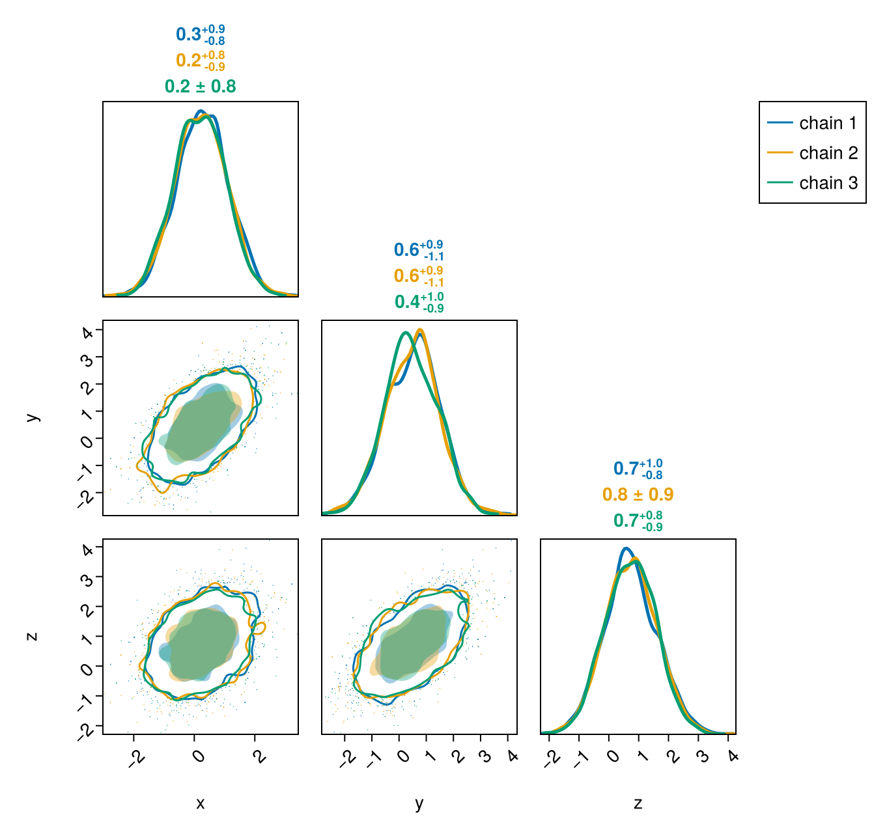

Integrations with other packages
FlexiChains is most obviously tied to the Turing.jl ecosystem, as described on the previous pages. However, it also contains some useful links to other packages (listed here in alphabetical order).
(Your custom sampler here...!)
If you have written a sampler that conforms to the AbstractMCMC interface, then you can get 'free' support for bundling into a FlexiChain{VarName} and a FlexiChain{Symbol} respectively by overloading these functions:
FlexiChains.to_vnt_and_stats — Function
to_vnt_and_stats(transition)::Tuple{VarNamedTuple,NamedTuple}Convert the first output (i.e. the 'transition') of an AbstractMCMC sampler into a VarNamedTuple mapping parameter names to their values, plus a NamedTuple of any additional statistics.
The VarNamedTuple will be converted into Parameter keys, and the NamedTuple into Extra keys.
If you are writing a custom AbstractMCMC sampler and want to allow users to collect the samples as a FlexiChain{VarName}, i.e.,
sample(...; chain_type=FlexiChain{VarName})then you should ensure that your method of AbstractMCMC.step returns a transition that can be passed to this method. (The other return value, the state, is not relevant.)
Note that this method is already implemented for DynamicPPL.VarNamedTuple (in which case the stats are empty) as well as DynamicPPL.ParamsWithStats. Thus the easiest solution is to just return one of those types.
FlexiChains.to_nt_and_stats — Function
to_nt_and_stats(transition)::Tuple{NamedTuple,NamedTuple}Convert the first output (i.e. the 'transition') of an AbstractMCMC sampler into a NamedTuple mapping parameter names to their values, plus a NamedTuple of any additional statistics.
The first NamedTuple will be converted into Parameter keys, and the second NamedTuple into Extra keys.
If you are writing a custom AbstractMCMC sampler and want to allow users to collect the samples as a FlexiChain{Symbol}, i.e.,
sample(...; chain_type=FlexiChain{Symbol})then you should ensure that your method of AbstractMCMC.step returns a transition that can be passed to this method. (The other return value, the state, is not relevant.)
As a concrete example, let's use the following setup:
using FlexiChains: FlexiChains, FlexiChain
using AbstractMCMC
struct M <: AbstractMCMC.AbstractModel end
struct S <: AbstractMCMC.AbstractSampler end
struct T end
function AbstractMCMC.step(rng, ::M, ::S, state=nothing; kwargs...)
T(), nothing
endHere T represents what AbstractMCMC calls a 'transition': it is the first return value of AbstractMCMC.step. Of course, in practice, your transition will carry more information than this.
Now suppose you want to sample with this and obtain a FlexiChain{Symbol}. As the docstrings above allude to, you will want to overload to_nt_and_stats:
FlexiChains.to_nt_and_stats(::T) = ((;hello=1.0), (;world=2.0))Then you can do
sample(M(), S(), 10; chain_type=FlexiChain{Symbol})FlexiChain (10 iterations, 1 chain)
↓ iter=1:10 | → chain=1:1
Parameter type Symbol
Parameters hello
Extra keys :world
Likewise for VarNamedTuple (although in this case, you should think carefully about whether you really need VarNamedTuple: if your sampler transition does not carry enough information to justify the richer data type, then it would probably be more meaningful to stick to NamedTuple and FlexiChain{Symbol}).
using DynamicPPL: VarNamedTuple, VarName
FlexiChains.to_vnt_and_stats(::T) = (VarNamedTuple(hello=1.0), (;world=2.0))
sample(M(), S(), 10; chain_type=FlexiChain{VarName})FlexiChain (10 iterations, 1 chain)
↓ iter=1:10 | → chain=1:1
Parameter type VarName
Parameters hello
Extra keys :world
AdvancedHMC.jl
Documentation for AdvancedHMC.jl
FlexiChains.to_nt_and_stats is overloaded for AdvancedHMC.Transition, so you can sample with AdvancedHMC into a FlexiChain{Symbol}. This is a slightly simplified version of the example in the AdvancedHMC README (here we use an analytical gradient rather than automatic differentiation):
using AdvancedHMC, AbstractMCMC
using LogDensityProblems
using FlexiChains: FlexiChain
# Set up AD-aware log-density function
struct LogTargetDensity
dim::Int
end
LogDensityProblems.logdensity(::LogTargetDensity, θ) = -sum(abs2, θ) / 2
LogDensityProblems.logdensity_and_gradient(::LogTargetDensity, θ) = (-sum(abs2, θ) / 2, -θ)
LogDensityProblems.dimension(p::LogTargetDensity) = p.dim
function LogDensityProblems.capabilities(::Type{LogTargetDensity})
return LogDensityProblems.LogDensityOrder{1}()
end
chn = AbstractMCMC.sample(
LogTargetDensity(10), AdvancedHMC.NUTS(0.8), 20;
n_adapts=10, chain_type=FlexiChain{Symbol},
)FlexiChain (20 iterations, 1 chain)
↓ iter=1:20 | → chain=1:1
Parameter type Symbol
Parameters params
Extra keys :n_steps, :is_accept, :acceptance_rate, :log_density, :hamiltonian_energy, :hamiltonian_energy_error, :max_hamiltonian_energy_error, :tree_depth, :numerical_error, :step_size, :nom_step_size, :is_adapt
Besides, each entry in chn[:params] is stored as a DimVector, so when you access the full set of entries you will get a stacked 3-D DimArray of (iters x chains x parameters) (see below for more information about the stacking).
DimensionalDistributions.jl
Documentation for DimensionalDistributions.jl
DimensionalDistributions.jl is not yet registered in the Julia package registry; at present you will need to install it from GitHub using ]add https://github.com/sethaxen/DimensionalDistributions.jl.
In the quickstart guide we saw that FlexiChains, by default, stores vector-valued parameters together. For example, chn[@varname(x)] here returns a DimArray of Vectors:
using FlexiChains, Turing
@model f() = x ~ MvNormal(zeros(3), I)
chn = sample(f(), MH(), MCMCThreads(), 5, 2; chain_type=VNChain, progress=false)
chn[@varname(x)]┌ 5×2 DimArray{Vector{Float64}, 2} Parameter(x) ┐
├───────────────────────────────────────────────┴───── dims ┐
↓ iter Sampled{Int64} 1:5 ForwardOrdered Regular Points,
→ chain Sampled{Int64} 1:2 ForwardOrdered Regular Points
└───────────────────────────────────────────────────────────┘
↓ → 1 2
1 [2.1441, -0.256806, 1.32353] [-0.631944, 0.278634, -1.42918]
2 [0.290138, 1.65294, -0.0652144] [1.04844, -0.264854, 0.425742]
3 [-1.67574, -0.571333, -0.866986] [-2.89791, 0.252786, -1.01021]
4 [0.142206, -1.47629, 1.40711] [1.54133, -0.174647, 0.884654]
5 [-1.88873, -0.68794, -0.407258] [1.01849, -0.393655, -0.468785]One might like to stack these vectors together, such that chn[@varname(x)] returns a three-dimensional DimArray instead. You can do this manually, for example:
using DimensionalData
school_dim = Dim{:school}([:a, :b, :c])
permutedims(stack(map(v -> DimVector(v, school_dim), chn[@varname(x)])), (2, 3, 1))┌ 5×2×3 DimArray{Float64, 3} ┐
├────────────────────────────┴──────────────────────── dims ┐
↓ iter Sampled{Int64} 1:5 ForwardOrdered Regular Points,
→ chain Sampled{Int64} 1:2 ForwardOrdered Regular Points,
↗ school Categorical{Symbol} [:a, …, :c] ForwardOrdered
└───────────────────────────────────────────────────────────┘
[:, :, 1]
↓ → 1 2
1 2.1441 -0.631944
2 0.290138 1.04844
3 -1.67574 -2.89791
4 0.142206 1.54133
5 -1.88873 1.01849This is of course a bit tedious. Unfortunately, there is not much that FlexiChains can do because MvNormal() itself returns plain Vectors that do not carry any dimensional information.
But, if you can use the withdims wrapper from DimensionalDistributions.jl, you will get a distribution that returns DimVectors:
using DimensionalDistributions
dim_mvnormal = withdims(MvNormal(zeros(3), I), school_dim)
rand(dim_mvnormal)┌ 3-element DimArray{Float64, 1} ┐
├────────────────────────────────┴──────────────────── dims ┐
↓ school Categorical{Symbol} [:a, …, :c] ForwardOrdered
└───────────────────────────────────────────────────────────┘
:a 0.433613
:b -0.835958
:c -0.99And if you use this in a Turing model, then this information will be carried through all the way to FlexiChains, and indexing into this parameter will automatically give you a stacked DimArray:
@model f2() = x ~ dim_mvnormal
chn2 = sample(f2(), MH(), MCMCThreads(), 5, 2; chain_type=VNChain, progress=false)
chn2[@varname(x)]┌ 5×2×3 DimArray{Float64, 3} Parameter(x) ┐
├─────────────────────────────────────────┴─────────── dims ┐
↓ iter Sampled{Int64} 1:5 ForwardOrdered Regular Points,
→ chain Sampled{Int64} 1:2 ForwardOrdered Regular Points,
↗ school Categorical{Symbol} [:a, …, :c] ForwardOrdered
└───────────────────────────────────────────────────────────┘
[:, :, 1]
↓ → 1 2
1 -0.504698 0.179353
2 -0.906293 -0.179553
3 -0.121715 0.235256
4 -0.513092 -0.845062
5 0.476583 0.250507Sub-VarName indexing also works.
chn2[@varname(x[1])]┌ 5×2 DimArray{Float64, 2} Parameter(x[1]) ┐
├──────────────────────────────────────────┴────────── dims ┐
↓ iter Sampled{Int64} 1:5 ForwardOrdered Regular Points,
→ chain Sampled{Int64} 1:2 ForwardOrdered Regular Points
└───────────────────────────────────────────────────────────┘
↓ → 1 2
1 -0.504698 0.179353
2 -0.906293 -0.179553
3 -0.121715 0.235256
4 -0.513092 -0.845062
5 0.476583 0.250507In principle, you should be able to even use DimensionalData selectors in the VarName, e.g. chn2[@varname(x[At(:b)])]; however, support for this is slightly flaky due to incomplete implementations of Base.checkbounds for DimensionalData (which is not something that FlexiChains can control). If you try this and find that something doesn't work, please do feel free to open an issue and we can help to upstream it.
JLD2.jl
FlexiChain and FlexiSummary objects can be serialised with JLD2.jl with no fuss. See the Serialization section below for an example.
PairPlots.jl
Documentation for PairPlots.jl
FlexiChains provides two ways to interact with PairPlots.jl.
Firstly, you can directly call pairplot(chn[, param_or_params]) on a FlexiChain.
PairPlots.pairplot — Function
PairPlots.pairplot(
chn::FlexiChain[, param_or_params];
pool_chains::Bool=false,
kwargs...
)Create a pair plot for the given chain. Note that PairPlots.jl uses Makie.jl as its plotting backend, so you will additionally need to load a Makie backend (e.g. with using GLMakie or using CairoMakie) before calling this function.
If no parameters are specified, this will plot all parameters in the chain. Note that non-parameter, i.e. Extra, keys are excluded by default. If you want to plot all keys, you can explicitly pass all keys with pairplot(chn, :).
The pool_chains keyword argument controls whether to pool all chains together into a single series, or to plot each chain separately.
Other keyword arguments are passed to PairPlots.pairplot.
using PairPlots, FlexiChains, Turing, CairoMakie
@model function f()
x ~ Normal()
y ~ Normal(x)
z ~ Normal(y)
1.0 ~ Normal(z)
end
chn = sample(f(), MH(), MCMCSerial(), 2000, 3; chain_type=VNChain)
pairplot(chn)
# Specify which parameters to plot
# pairplot(chn, [@varname(x), @varname(y)])
# Pool all chains together
# pairplot(chn; pool_chains=true)Sampling (Chain 1 of 3) 0%| | ETA: N/A
Sampling (Chain 1 of 3) 0%|▏ | ETA: 0:01:11
Sampling (Chain 1 of 3) 1%|▎ | ETA: 0:00:35
Sampling (Chain 1 of 3) 2%|▍ | ETA: 0:00:23
Sampling (Chain 1 of 3) 2%|▌ | ETA: 0:00:17
Sampling (Chain 1 of 3) 2%|▋ | ETA: 0:00:14
Sampling (Chain 1 of 3) 3%|▊ | ETA: 0:00:11
Sampling (Chain 1 of 3) 4%|█ | ETA: 0:00:10
Sampling (Chain 1 of 3) 4%|█▏ | ETA: 0:00:09
Sampling (Chain 1 of 3) 4%|█▎ | ETA: 0:00:08
Sampling (Chain 1 of 3) 5%|█▍ | ETA: 0:00:07
Sampling (Chain 1 of 3) 6%|█▌ | ETA: 0:00:06
Sampling (Chain 1 of 3) 6%|█▋ | ETA: 0:00:06
Sampling (Chain 1 of 3) 6%|█▊ | ETA: 0:00:05
Sampling (Chain 1 of 3) 7%|█▉ | ETA: 0:00:05
Sampling (Chain 1 of 3) 8%|██ | ETA: 0:00:04
Sampling (Chain 1 of 3) 8%|██▏ | ETA: 0:00:04
Sampling (Chain 1 of 3) 8%|██▎ | ETA: 0:00:04
Sampling (Chain 1 of 3) 9%|██▍ | ETA: 0:00:04
Sampling (Chain 1 of 3) 10%|██▋ | ETA: 0:00:03
Sampling (Chain 1 of 3) 10%|██▊ | ETA: 0:00:03
Sampling (Chain 1 of 3) 10%|██▉ | ETA: 0:00:03
Sampling (Chain 1 of 3) 11%|███ | ETA: 0:00:03
Sampling (Chain 1 of 3) 12%|███▏ | ETA: 0:00:03
Sampling (Chain 1 of 3) 12%|███▎ | ETA: 0:00:03
Sampling (Chain 1 of 3) 12%|███▍ | ETA: 0:00:03
Sampling (Chain 1 of 3) 13%|███▌ | ETA: 0:00:02
Sampling (Chain 1 of 3) 14%|███▋ | ETA: 0:00:02
Sampling (Chain 1 of 3) 14%|███▊ | ETA: 0:00:02
Sampling (Chain 1 of 3) 14%|███▉ | ETA: 0:00:02
Sampling (Chain 1 of 3) 15%|████ | ETA: 0:00:02
Sampling (Chain 1 of 3) 16%|████▏ | ETA: 0:00:02
Sampling (Chain 1 of 3) 16%|████▍ | ETA: 0:00:02
Sampling (Chain 1 of 3) 16%|████▌ | ETA: 0:00:02
Sampling (Chain 1 of 3) 17%|████▋ | ETA: 0:00:02
Sampling (Chain 1 of 3) 18%|████▊ | ETA: 0:00:02
Sampling (Chain 1 of 3) 18%|████▉ | ETA: 0:00:02
Sampling (Chain 1 of 3) 18%|█████ | ETA: 0:00:02
Sampling (Chain 1 of 3) 19%|█████▏ | ETA: 0:00:02
Sampling (Chain 1 of 3) 20%|█████▎ | ETA: 0:00:01
Sampling (Chain 1 of 3) 20%|█████▍ | ETA: 0:00:01
Sampling (Chain 1 of 3) 20%|█████▌ | ETA: 0:00:01
Sampling (Chain 1 of 3) 21%|█████▋ | ETA: 0:00:01
Sampling (Chain 1 of 3) 22%|█████▊ | ETA: 0:00:01
Sampling (Chain 1 of 3) 22%|██████ | ETA: 0:00:01
Sampling (Chain 1 of 3) 22%|██████▏ | ETA: 0:00:01
Sampling (Chain 1 of 3) 23%|██████▎ | ETA: 0:00:01
Sampling (Chain 1 of 3) 24%|██████▍ | ETA: 0:00:01
Sampling (Chain 1 of 3) 24%|██████▌ | ETA: 0:00:01
Sampling (Chain 1 of 3) 24%|██████▋ | ETA: 0:00:01
Sampling (Chain 1 of 3) 25%|██████▊ | ETA: 0:00:01
Sampling (Chain 1 of 3) 26%|██████▉ | ETA: 0:00:01
Sampling (Chain 1 of 3) 26%|███████ | ETA: 0:00:01
Sampling (Chain 1 of 3) 26%|███████▏ | ETA: 0:00:01
Sampling (Chain 1 of 3) 27%|███████▎ | ETA: 0:00:01
Sampling (Chain 1 of 3) 28%|███████▍ | ETA: 0:00:01
Sampling (Chain 1 of 3) 28%|███████▌ | ETA: 0:00:01
Sampling (Chain 1 of 3) 28%|███████▊ | ETA: 0:00:01
Sampling (Chain 1 of 3) 29%|███████▉ | ETA: 0:00:01
Sampling (Chain 1 of 3) 30%|████████ | ETA: 0:00:01
Sampling (Chain 1 of 3) 30%|████████▏ | ETA: 0:00:01
Sampling (Chain 1 of 3) 30%|████████▎ | ETA: 0:00:01
Sampling (Chain 1 of 3) 31%|████████▍ | ETA: 0:00:01
Sampling (Chain 1 of 3) 32%|████████▌ | ETA: 0:00:01
Sampling (Chain 1 of 3) 32%|████████▋ | ETA: 0:00:01
Sampling (Chain 1 of 3) 32%|████████▊ | ETA: 0:00:01
Sampling (Chain 1 of 3) 33%|████████▉ | ETA: 0:00:01
Sampling (Chain 1 of 3) 34%|█████████ | ETA: 0:00:01
Sampling (Chain 1 of 3) 34%|█████████▏ | ETA: 0:00:01
Sampling (Chain 1 of 3) 34%|█████████▍ | ETA: 0:00:01
Sampling (Chain 1 of 3) 35%|█████████▌ | ETA: 0:00:01
Sampling (Chain 1 of 3) 36%|█████████▋ | ETA: 0:00:01
Sampling (Chain 1 of 3) 36%|█████████▊ | ETA: 0:00:01
Sampling (Chain 1 of 3) 36%|█████████▉ | ETA: 0:00:01
Sampling (Chain 1 of 3) 37%|██████████ | ETA: 0:00:01
Sampling (Chain 1 of 3) 38%|██████████▏ | ETA: 0:00:01
Sampling (Chain 1 of 3) 38%|██████████▎ | ETA: 0:00:01
Sampling (Chain 1 of 3) 38%|██████████▍ | ETA: 0:00:01
Sampling (Chain 1 of 3) 39%|██████████▌ | ETA: 0:00:01
Sampling (Chain 1 of 3) 40%|██████████▋ | ETA: 0:00:01
Sampling (Chain 1 of 3) 40%|██████████▊ | ETA: 0:00:01
Sampling (Chain 1 of 3) 40%|██████████▉ | ETA: 0:00:01
Sampling (Chain 1 of 3) 41%|███████████▏ | ETA: 0:00:01
Sampling (Chain 1 of 3) 42%|███████████▎ | ETA: 0:00:01
Sampling (Chain 1 of 3) 42%|███████████▍ | ETA: 0:00:01
Sampling (Chain 1 of 3) 42%|███████████▌ | ETA: 0:00:00
Sampling (Chain 1 of 3) 43%|███████████▋ | ETA: 0:00:00
Sampling (Chain 1 of 3) 44%|███████████▊ | ETA: 0:00:00
Sampling (Chain 1 of 3) 44%|███████████▉ | ETA: 0:00:00
Sampling (Chain 1 of 3) 44%|████████████ | ETA: 0:00:00
Sampling (Chain 1 of 3) 45%|████████████▏ | ETA: 0:00:00
Sampling (Chain 1 of 3) 46%|████████████▎ | ETA: 0:00:00
Sampling (Chain 1 of 3) 46%|████████████▍ | ETA: 0:00:00
Sampling (Chain 1 of 3) 46%|████████████▌ | ETA: 0:00:00
Sampling (Chain 1 of 3) 47%|████████████▊ | ETA: 0:00:00
Sampling (Chain 1 of 3) 48%|████████████▉ | ETA: 0:00:00
Sampling (Chain 1 of 3) 48%|█████████████ | ETA: 0:00:00
Sampling (Chain 1 of 3) 48%|█████████████▏ | ETA: 0:00:00
Sampling (Chain 1 of 3) 49%|█████████████▎ | ETA: 0:00:00
Sampling (Chain 1 of 3) 50%|█████████████▍ | ETA: 0:00:00
Sampling (Chain 1 of 3) 50%|█████████████▌ | ETA: 0:00:00
Sampling (Chain 1 of 3) 50%|█████████████▋ | ETA: 0:00:00
Sampling (Chain 1 of 3) 51%|█████████████▊ | ETA: 0:00:00
Sampling (Chain 1 of 3) 52%|█████████████▉ | ETA: 0:00:00
Sampling (Chain 1 of 3) 52%|██████████████ | ETA: 0:00:00
Sampling (Chain 1 of 3) 52%|██████████████▏ | ETA: 0:00:00
Sampling (Chain 1 of 3) 53%|██████████████▎ | ETA: 0:00:00
Sampling (Chain 1 of 3) 54%|██████████████▌ | ETA: 0:00:00
Sampling (Chain 1 of 3) 54%|██████████████▋ | ETA: 0:00:00
Sampling (Chain 1 of 3) 55%|██████████████▊ | ETA: 0:00:00
Sampling (Chain 1 of 3) 55%|██████████████▉ | ETA: 0:00:00
Sampling (Chain 1 of 3) 56%|███████████████ | ETA: 0:00:00
Sampling (Chain 1 of 3) 56%|███████████████▏ | ETA: 0:00:00
Sampling (Chain 1 of 3) 56%|███████████████▎ | ETA: 0:00:00
Sampling (Chain 1 of 3) 57%|███████████████▍ | ETA: 0:00:00
Sampling (Chain 1 of 3) 57%|███████████████▌ | ETA: 0:00:00
Sampling (Chain 1 of 3) 58%|███████████████▋ | ETA: 0:00:00
Sampling (Chain 1 of 3) 58%|███████████████▊ | ETA: 0:00:00
Sampling (Chain 1 of 3) 59%|███████████████▉ | ETA: 0:00:00
Sampling (Chain 1 of 3) 60%|████████████████▏ | ETA: 0:00:00
Sampling (Chain 1 of 3) 60%|████████████████▎ | ETA: 0:00:00
Sampling (Chain 1 of 3) 60%|████████████████▍ | ETA: 0:00:00
Sampling (Chain 1 of 3) 61%|████████████████▌ | ETA: 0:00:00
Sampling (Chain 1 of 3) 62%|████████████████▋ | ETA: 0:00:00
Sampling (Chain 1 of 3) 62%|████████████████▊ | ETA: 0:00:00
Sampling (Chain 1 of 3) 62%|████████████████▉ | ETA: 0:00:00
Sampling (Chain 1 of 3) 63%|█████████████████ | ETA: 0:00:00
Sampling (Chain 1 of 3) 64%|█████████████████▏ | ETA: 0:00:00
Sampling (Chain 1 of 3) 64%|█████████████████▎ | ETA: 0:00:00
Sampling (Chain 1 of 3) 64%|█████████████████▍ | ETA: 0:00:00
Sampling (Chain 1 of 3) 65%|█████████████████▌ | ETA: 0:00:00
Sampling (Chain 1 of 3) 66%|█████████████████▋ | ETA: 0:00:00
Sampling (Chain 1 of 3) 66%|█████████████████▉ | ETA: 0:00:00
Sampling (Chain 1 of 3) 66%|██████████████████ | ETA: 0:00:00
Sampling (Chain 1 of 3) 67%|██████████████████▏ | ETA: 0:00:00
Sampling (Chain 1 of 3) 68%|██████████████████▎ | ETA: 0:00:00
Sampling (Chain 1 of 3) 68%|██████████████████▍ | ETA: 0:00:00
Sampling (Chain 1 of 3) 68%|██████████████████▌ | ETA: 0:00:00
Sampling (Chain 1 of 3) 69%|██████████████████▋ | ETA: 0:00:00
Sampling (Chain 1 of 3) 70%|██████████████████▊ | ETA: 0:00:00
Sampling (Chain 1 of 3) 70%|██████████████████▉ | ETA: 0:00:00
Sampling (Chain 1 of 3) 70%|███████████████████ | ETA: 0:00:00
Sampling (Chain 1 of 3) 71%|███████████████████▏ | ETA: 0:00:00
Sampling (Chain 1 of 3) 72%|███████████████████▎ | ETA: 0:00:00
Sampling (Chain 1 of 3) 72%|███████████████████▌ | ETA: 0:00:00
Sampling (Chain 1 of 3) 72%|███████████████████▋ | ETA: 0:00:00
Sampling (Chain 1 of 3) 73%|███████████████████▊ | ETA: 0:00:00
Sampling (Chain 1 of 3) 74%|███████████████████▉ | ETA: 0:00:00
Sampling (Chain 1 of 3) 74%|████████████████████ | ETA: 0:00:00
Sampling (Chain 1 of 3) 74%|████████████████████▏ | ETA: 0:00:00
Sampling (Chain 1 of 3) 75%|████████████████████▎ | ETA: 0:00:00
Sampling (Chain 1 of 3) 76%|████████████████████▍ | ETA: 0:00:00
Sampling (Chain 1 of 3) 76%|████████████████████▌ | ETA: 0:00:00
Sampling (Chain 1 of 3) 76%|████████████████████▋ | ETA: 0:00:00
Sampling (Chain 1 of 3) 77%|████████████████████▊ | ETA: 0:00:00
Sampling (Chain 1 of 3) 78%|████████████████████▉ | ETA: 0:00:00
Sampling (Chain 1 of 3) 78%|█████████████████████ | ETA: 0:00:00
Sampling (Chain 1 of 3) 78%|█████████████████████▎ | ETA: 0:00:00
Sampling (Chain 1 of 3) 79%|█████████████████████▍ | ETA: 0:00:00
Sampling (Chain 1 of 3) 80%|█████████████████████▌ | ETA: 0:00:00
Sampling (Chain 1 of 3) 80%|█████████████████████▋ | ETA: 0:00:00
Sampling (Chain 1 of 3) 80%|█████████████████████▊ | ETA: 0:00:00
Sampling (Chain 1 of 3) 81%|█████████████████████▉ | ETA: 0:00:00
Sampling (Chain 1 of 3) 82%|██████████████████████ | ETA: 0:00:00
Sampling (Chain 1 of 3) 82%|██████████████████████▏ | ETA: 0:00:00
Sampling (Chain 1 of 3) 82%|██████████████████████▎ | ETA: 0:00:00
Sampling (Chain 1 of 3) 83%|██████████████████████▍ | ETA: 0:00:00
Sampling (Chain 1 of 3) 84%|██████████████████████▌ | ETA: 0:00:00
Sampling (Chain 1 of 3) 84%|██████████████████████▋ | ETA: 0:00:00
Sampling (Chain 1 of 3) 84%|██████████████████████▉ | ETA: 0:00:00
Sampling (Chain 1 of 3) 85%|███████████████████████ | ETA: 0:00:00
Sampling (Chain 1 of 3) 86%|███████████████████████▏ | ETA: 0:00:00
Sampling (Chain 1 of 3) 86%|███████████████████████▎ | ETA: 0:00:00
Sampling (Chain 1 of 3) 86%|███████████████████████▍ | ETA: 0:00:00
Sampling (Chain 1 of 3) 87%|███████████████████████▌ | ETA: 0:00:00
Sampling (Chain 1 of 3) 88%|███████████████████████▋ | ETA: 0:00:00
Sampling (Chain 1 of 3) 88%|███████████████████████▊ | ETA: 0:00:00
Sampling (Chain 1 of 3) 88%|███████████████████████▉ | ETA: 0:00:00
Sampling (Chain 1 of 3) 89%|████████████████████████ | ETA: 0:00:00
Sampling (Chain 1 of 3) 90%|████████████████████████▏ | ETA: 0:00:00
Sampling (Chain 1 of 3) 90%|████████████████████████▎ | ETA: 0:00:00
Sampling (Chain 1 of 3) 90%|████████████████████████▍ | ETA: 0:00:00
Sampling (Chain 1 of 3) 91%|████████████████████████▋ | ETA: 0:00:00
Sampling (Chain 1 of 3) 92%|████████████████████████▊ | ETA: 0:00:00
Sampling (Chain 1 of 3) 92%|████████████████████████▉ | ETA: 0:00:00
Sampling (Chain 1 of 3) 92%|█████████████████████████ | ETA: 0:00:00
Sampling (Chain 1 of 3) 93%|█████████████████████████▏ | ETA: 0:00:00
Sampling (Chain 1 of 3) 94%|█████████████████████████▎ | ETA: 0:00:00
Sampling (Chain 1 of 3) 94%|█████████████████████████▍ | ETA: 0:00:00
Sampling (Chain 1 of 3) 94%|█████████████████████████▌ | ETA: 0:00:00
Sampling (Chain 1 of 3) 95%|█████████████████████████▋ | ETA: 0:00:00
Sampling (Chain 1 of 3) 96%|█████████████████████████▊ | ETA: 0:00:00
Sampling (Chain 1 of 3) 96%|█████████████████████████▉ | ETA: 0:00:00
Sampling (Chain 1 of 3) 96%|██████████████████████████ | ETA: 0:00:00
Sampling (Chain 1 of 3) 97%|██████████████████████████▎| ETA: 0:00:00
Sampling (Chain 1 of 3) 98%|██████████████████████████▍| ETA: 0:00:00
Sampling (Chain 1 of 3) 98%|██████████████████████████▌| ETA: 0:00:00
Sampling (Chain 1 of 3) 98%|██████████████████████████▋| ETA: 0:00:00
Sampling (Chain 1 of 3) 99%|██████████████████████████▊| ETA: 0:00:00
Sampling (Chain 1 of 3) 100%|██████████████████████████▉| ETA: 0:00:00
Sampling (Chain 1 of 3) 100%|███████████████████████████| Time: 0:00:00
Sampling (Chain 1 of 3) 100%|███████████████████████████| Time: 0:00:01
Sampling (Chain 2 of 3) 0%| | ETA: N/A
Sampling (Chain 2 of 3) 0%|▏ | ETA: 0:00:00
Sampling (Chain 2 of 3) 1%|▎ | ETA: 0:00:00
Sampling (Chain 2 of 3) 2%|▍ | ETA: 0:00:00
Sampling (Chain 2 of 3) 2%|▌ | ETA: 0:00:00
Sampling (Chain 2 of 3) 2%|▋ | ETA: 0:00:00
Sampling (Chain 2 of 3) 3%|▊ | ETA: 0:00:00
Sampling (Chain 2 of 3) 4%|█ | ETA: 0:00:00
Sampling (Chain 2 of 3) 4%|█▏ | ETA: 0:00:00
Sampling (Chain 2 of 3) 4%|█▎ | ETA: 0:00:00
Sampling (Chain 2 of 3) 5%|█▍ | ETA: 0:00:00
Sampling (Chain 2 of 3) 6%|█▌ | ETA: 0:00:00
Sampling (Chain 2 of 3) 6%|█▋ | ETA: 0:00:00
Sampling (Chain 2 of 3) 6%|█▊ | ETA: 0:00:00
Sampling (Chain 2 of 3) 7%|█▉ | ETA: 0:00:00
Sampling (Chain 2 of 3) 8%|██ | ETA: 0:00:00
Sampling (Chain 2 of 3) 8%|██▏ | ETA: 0:00:00
Sampling (Chain 2 of 3) 8%|██▎ | ETA: 0:00:00
Sampling (Chain 2 of 3) 9%|██▍ | ETA: 0:00:00
Sampling (Chain 2 of 3) 10%|██▋ | ETA: 0:00:00
Sampling (Chain 2 of 3) 10%|██▊ | ETA: 0:00:00
Sampling (Chain 2 of 3) 10%|██▉ | ETA: 0:00:00
Sampling (Chain 2 of 3) 11%|███ | ETA: 0:00:00
Sampling (Chain 2 of 3) 12%|███▏ | ETA: 0:00:00
Sampling (Chain 2 of 3) 12%|███▎ | ETA: 0:00:00
Sampling (Chain 2 of 3) 12%|███▍ | ETA: 0:00:00
Sampling (Chain 2 of 3) 13%|███▌ | ETA: 0:00:00
Sampling (Chain 2 of 3) 14%|███▋ | ETA: 0:00:00
Sampling (Chain 2 of 3) 14%|███▊ | ETA: 0:00:00
Sampling (Chain 2 of 3) 14%|███▉ | ETA: 0:00:00
Sampling (Chain 2 of 3) 15%|████ | ETA: 0:00:00
Sampling (Chain 2 of 3) 16%|████▏ | ETA: 0:00:00
Sampling (Chain 2 of 3) 16%|████▍ | ETA: 0:00:00
Sampling (Chain 2 of 3) 16%|████▌ | ETA: 0:00:00
Sampling (Chain 2 of 3) 17%|████▋ | ETA: 0:00:00
Sampling (Chain 2 of 3) 18%|████▊ | ETA: 0:00:00
Sampling (Chain 2 of 3) 18%|████▉ | ETA: 0:00:00
Sampling (Chain 2 of 3) 18%|█████ | ETA: 0:00:00
Sampling (Chain 2 of 3) 19%|█████▏ | ETA: 0:00:00
Sampling (Chain 2 of 3) 20%|█████▎ | ETA: 0:00:00
Sampling (Chain 2 of 3) 20%|█████▍ | ETA: 0:00:00
Sampling (Chain 2 of 3) 20%|█████▌ | ETA: 0:00:00
Sampling (Chain 2 of 3) 21%|█████▋ | ETA: 0:00:00
Sampling (Chain 2 of 3) 22%|█████▊ | ETA: 0:00:00
Sampling (Chain 2 of 3) 22%|██████ | ETA: 0:00:00
Sampling (Chain 2 of 3) 22%|██████▏ | ETA: 0:00:00
Sampling (Chain 2 of 3) 23%|██████▎ | ETA: 0:00:00
Sampling (Chain 2 of 3) 24%|██████▍ | ETA: 0:00:00
Sampling (Chain 2 of 3) 24%|██████▌ | ETA: 0:00:00
Sampling (Chain 2 of 3) 24%|██████▋ | ETA: 0:00:00
Sampling (Chain 2 of 3) 25%|██████▊ | ETA: 0:00:00
Sampling (Chain 2 of 3) 26%|██████▉ | ETA: 0:00:00
Sampling (Chain 2 of 3) 26%|███████ | ETA: 0:00:00
Sampling (Chain 2 of 3) 26%|███████▏ | ETA: 0:00:00
Sampling (Chain 2 of 3) 27%|███████▎ | ETA: 0:00:00
Sampling (Chain 2 of 3) 28%|███████▍ | ETA: 0:00:00
Sampling (Chain 2 of 3) 28%|███████▌ | ETA: 0:00:00
Sampling (Chain 2 of 3) 28%|███████▊ | ETA: 0:00:00
Sampling (Chain 2 of 3) 29%|███████▉ | ETA: 0:00:00
Sampling (Chain 2 of 3) 30%|████████ | ETA: 0:00:00
Sampling (Chain 2 of 3) 30%|████████▏ | ETA: 0:00:00
Sampling (Chain 2 of 3) 30%|████████▎ | ETA: 0:00:00
Sampling (Chain 2 of 3) 31%|████████▍ | ETA: 0:00:00
Sampling (Chain 2 of 3) 32%|████████▌ | ETA: 0:00:00
Sampling (Chain 2 of 3) 32%|████████▋ | ETA: 0:00:00
Sampling (Chain 2 of 3) 32%|████████▊ | ETA: 0:00:00
Sampling (Chain 2 of 3) 33%|████████▉ | ETA: 0:00:00
Sampling (Chain 2 of 3) 34%|█████████ | ETA: 0:00:00
Sampling (Chain 2 of 3) 34%|█████████▏ | ETA: 0:00:00
Sampling (Chain 2 of 3) 34%|█████████▍ | ETA: 0:00:00
Sampling (Chain 2 of 3) 35%|█████████▌ | ETA: 0:00:00
Sampling (Chain 2 of 3) 36%|█████████▋ | ETA: 0:00:00
Sampling (Chain 2 of 3) 36%|█████████▊ | ETA: 0:00:00
Sampling (Chain 2 of 3) 36%|█████████▉ | ETA: 0:00:00
Sampling (Chain 2 of 3) 37%|██████████ | ETA: 0:00:00
Sampling (Chain 2 of 3) 38%|██████████▏ | ETA: 0:00:00
Sampling (Chain 2 of 3) 38%|██████████▎ | ETA: 0:00:00
Sampling (Chain 2 of 3) 38%|██████████▍ | ETA: 0:00:00
Sampling (Chain 2 of 3) 39%|██████████▌ | ETA: 0:00:00
Sampling (Chain 2 of 3) 40%|██████████▋ | ETA: 0:00:00
Sampling (Chain 2 of 3) 40%|██████████▊ | ETA: 0:00:00
Sampling (Chain 2 of 3) 40%|██████████▉ | ETA: 0:00:00
Sampling (Chain 2 of 3) 41%|███████████▏ | ETA: 0:00:00
Sampling (Chain 2 of 3) 42%|███████████▎ | ETA: 0:00:00
Sampling (Chain 2 of 3) 42%|███████████▍ | ETA: 0:00:00
Sampling (Chain 2 of 3) 42%|███████████▌ | ETA: 0:00:00
Sampling (Chain 2 of 3) 43%|███████████▋ | ETA: 0:00:00
Sampling (Chain 2 of 3) 44%|███████████▊ | ETA: 0:00:00
Sampling (Chain 2 of 3) 44%|███████████▉ | ETA: 0:00:00
Sampling (Chain 2 of 3) 44%|████████████ | ETA: 0:00:00
Sampling (Chain 2 of 3) 45%|████████████▏ | ETA: 0:00:00
Sampling (Chain 2 of 3) 46%|████████████▎ | ETA: 0:00:00
Sampling (Chain 2 of 3) 46%|████████████▍ | ETA: 0:00:00
Sampling (Chain 2 of 3) 46%|████████████▌ | ETA: 0:00:00
Sampling (Chain 2 of 3) 47%|████████████▊ | ETA: 0:00:00
Sampling (Chain 2 of 3) 48%|████████████▉ | ETA: 0:00:00
Sampling (Chain 2 of 3) 48%|█████████████ | ETA: 0:00:00
Sampling (Chain 2 of 3) 48%|█████████████▏ | ETA: 0:00:00
Sampling (Chain 2 of 3) 49%|█████████████▎ | ETA: 0:00:00
Sampling (Chain 2 of 3) 50%|█████████████▍ | ETA: 0:00:00
Sampling (Chain 2 of 3) 50%|█████████████▌ | ETA: 0:00:00
Sampling (Chain 2 of 3) 50%|█████████████▋ | ETA: 0:00:00
Sampling (Chain 2 of 3) 51%|█████████████▊ | ETA: 0:00:00
Sampling (Chain 2 of 3) 52%|█████████████▉ | ETA: 0:00:00
Sampling (Chain 2 of 3) 52%|██████████████ | ETA: 0:00:00
Sampling (Chain 2 of 3) 52%|██████████████▏ | ETA: 0:00:00
Sampling (Chain 2 of 3) 53%|██████████████▎ | ETA: 0:00:00
Sampling (Chain 2 of 3) 54%|██████████████▌ | ETA: 0:00:00
Sampling (Chain 2 of 3) 54%|██████████████▋ | ETA: 0:00:00
Sampling (Chain 2 of 3) 55%|██████████████▊ | ETA: 0:00:00
Sampling (Chain 2 of 3) 55%|██████████████▉ | ETA: 0:00:00
Sampling (Chain 2 of 3) 56%|███████████████ | ETA: 0:00:00
Sampling (Chain 2 of 3) 56%|███████████████▏ | ETA: 0:00:00
Sampling (Chain 2 of 3) 56%|███████████████▎ | ETA: 0:00:00
Sampling (Chain 2 of 3) 57%|███████████████▍ | ETA: 0:00:00
Sampling (Chain 2 of 3) 57%|███████████████▌ | ETA: 0:00:00
Sampling (Chain 2 of 3) 58%|███████████████▋ | ETA: 0:00:00
Sampling (Chain 2 of 3) 58%|███████████████▊ | ETA: 0:00:00
Sampling (Chain 2 of 3) 59%|███████████████▉ | ETA: 0:00:00
Sampling (Chain 2 of 3) 60%|████████████████▏ | ETA: 0:00:00
Sampling (Chain 2 of 3) 60%|████████████████▎ | ETA: 0:00:00
Sampling (Chain 2 of 3) 60%|████████████████▍ | ETA: 0:00:00
Sampling (Chain 2 of 3) 61%|████████████████▌ | ETA: 0:00:00
Sampling (Chain 2 of 3) 62%|████████████████▋ | ETA: 0:00:00
Sampling (Chain 2 of 3) 62%|████████████████▊ | ETA: 0:00:00
Sampling (Chain 2 of 3) 62%|████████████████▉ | ETA: 0:00:00
Sampling (Chain 2 of 3) 63%|█████████████████ | ETA: 0:00:00
Sampling (Chain 2 of 3) 64%|█████████████████▏ | ETA: 0:00:00
Sampling (Chain 2 of 3) 64%|█████████████████▎ | ETA: 0:00:00
Sampling (Chain 2 of 3) 64%|█████████████████▍ | ETA: 0:00:00
Sampling (Chain 2 of 3) 65%|█████████████████▌ | ETA: 0:00:00
Sampling (Chain 2 of 3) 66%|█████████████████▋ | ETA: 0:00:00
Sampling (Chain 2 of 3) 66%|█████████████████▉ | ETA: 0:00:00
Sampling (Chain 2 of 3) 66%|██████████████████ | ETA: 0:00:00
Sampling (Chain 2 of 3) 67%|██████████████████▏ | ETA: 0:00:00
Sampling (Chain 2 of 3) 68%|██████████████████▎ | ETA: 0:00:00
Sampling (Chain 2 of 3) 68%|██████████████████▍ | ETA: 0:00:00
Sampling (Chain 2 of 3) 68%|██████████████████▌ | ETA: 0:00:00
Sampling (Chain 2 of 3) 69%|██████████████████▋ | ETA: 0:00:00
Sampling (Chain 2 of 3) 70%|██████████████████▊ | ETA: 0:00:00
Sampling (Chain 2 of 3) 70%|██████████████████▉ | ETA: 0:00:00
Sampling (Chain 2 of 3) 70%|███████████████████ | ETA: 0:00:00
Sampling (Chain 2 of 3) 71%|███████████████████▏ | ETA: 0:00:00
Sampling (Chain 2 of 3) 72%|███████████████████▎ | ETA: 0:00:00
Sampling (Chain 2 of 3) 72%|███████████████████▌ | ETA: 0:00:00
Sampling (Chain 2 of 3) 72%|███████████████████▋ | ETA: 0:00:00
Sampling (Chain 2 of 3) 73%|███████████████████▊ | ETA: 0:00:00
Sampling (Chain 2 of 3) 74%|███████████████████▉ | ETA: 0:00:00
Sampling (Chain 2 of 3) 74%|████████████████████ | ETA: 0:00:00
Sampling (Chain 2 of 3) 74%|████████████████████▏ | ETA: 0:00:00
Sampling (Chain 2 of 3) 75%|████████████████████▎ | ETA: 0:00:00
Sampling (Chain 2 of 3) 76%|████████████████████▍ | ETA: 0:00:00
Sampling (Chain 2 of 3) 76%|████████████████████▌ | ETA: 0:00:00
Sampling (Chain 2 of 3) 76%|████████████████████▋ | ETA: 0:00:00
Sampling (Chain 2 of 3) 77%|████████████████████▊ | ETA: 0:00:00
Sampling (Chain 2 of 3) 78%|████████████████████▉ | ETA: 0:00:00
Sampling (Chain 2 of 3) 78%|█████████████████████ | ETA: 0:00:00
Sampling (Chain 2 of 3) 78%|█████████████████████▎ | ETA: 0:00:00
Sampling (Chain 2 of 3) 79%|█████████████████████▍ | ETA: 0:00:00
Sampling (Chain 2 of 3) 80%|█████████████████████▌ | ETA: 0:00:00
Sampling (Chain 2 of 3) 80%|█████████████████████▋ | ETA: 0:00:00
Sampling (Chain 2 of 3) 80%|█████████████████████▊ | ETA: 0:00:00
Sampling (Chain 2 of 3) 81%|█████████████████████▉ | ETA: 0:00:00
Sampling (Chain 2 of 3) 82%|██████████████████████ | ETA: 0:00:00
Sampling (Chain 2 of 3) 82%|██████████████████████▏ | ETA: 0:00:00
Sampling (Chain 2 of 3) 82%|██████████████████████▎ | ETA: 0:00:00
Sampling (Chain 2 of 3) 83%|██████████████████████▍ | ETA: 0:00:00
Sampling (Chain 2 of 3) 84%|██████████████████████▌ | ETA: 0:00:00
Sampling (Chain 2 of 3) 84%|██████████████████████▋ | ETA: 0:00:00
Sampling (Chain 2 of 3) 84%|██████████████████████▉ | ETA: 0:00:00
Sampling (Chain 2 of 3) 85%|███████████████████████ | ETA: 0:00:00
Sampling (Chain 2 of 3) 86%|███████████████████████▏ | ETA: 0:00:00
Sampling (Chain 2 of 3) 86%|███████████████████████▎ | ETA: 0:00:00
Sampling (Chain 2 of 3) 86%|███████████████████████▍ | ETA: 0:00:00
Sampling (Chain 2 of 3) 87%|███████████████████████▌ | ETA: 0:00:00
Sampling (Chain 2 of 3) 88%|███████████████████████▋ | ETA: 0:00:00
Sampling (Chain 2 of 3) 88%|███████████████████████▊ | ETA: 0:00:00
Sampling (Chain 2 of 3) 88%|███████████████████████▉ | ETA: 0:00:00
Sampling (Chain 2 of 3) 89%|████████████████████████ | ETA: 0:00:00
Sampling (Chain 2 of 3) 90%|████████████████████████▏ | ETA: 0:00:00
Sampling (Chain 2 of 3) 90%|████████████████████████▎ | ETA: 0:00:00
Sampling (Chain 2 of 3) 90%|████████████████████████▍ | ETA: 0:00:00
Sampling (Chain 2 of 3) 91%|████████████████████████▋ | ETA: 0:00:00
Sampling (Chain 2 of 3) 92%|████████████████████████▊ | ETA: 0:00:00
Sampling (Chain 2 of 3) 92%|████████████████████████▉ | ETA: 0:00:00
Sampling (Chain 2 of 3) 92%|█████████████████████████ | ETA: 0:00:00
Sampling (Chain 2 of 3) 93%|█████████████████████████▏ | ETA: 0:00:00
Sampling (Chain 2 of 3) 94%|█████████████████████████▎ | ETA: 0:00:00
Sampling (Chain 2 of 3) 94%|█████████████████████████▍ | ETA: 0:00:00
Sampling (Chain 2 of 3) 94%|█████████████████████████▌ | ETA: 0:00:00
Sampling (Chain 2 of 3) 95%|█████████████████████████▋ | ETA: 0:00:00
Sampling (Chain 2 of 3) 96%|█████████████████████████▊ | ETA: 0:00:00
Sampling (Chain 2 of 3) 96%|█████████████████████████▉ | ETA: 0:00:00
Sampling (Chain 2 of 3) 96%|██████████████████████████ | ETA: 0:00:00
Sampling (Chain 2 of 3) 97%|██████████████████████████▎| ETA: 0:00:00
Sampling (Chain 2 of 3) 98%|██████████████████████████▍| ETA: 0:00:00
Sampling (Chain 2 of 3) 98%|██████████████████████████▌| ETA: 0:00:00
Sampling (Chain 2 of 3) 98%|██████████████████████████▋| ETA: 0:00:00
Sampling (Chain 2 of 3) 99%|██████████████████████████▊| ETA: 0:00:00
Sampling (Chain 2 of 3) 100%|██████████████████████████▉| ETA: 0:00:00
Sampling (Chain 2 of 3) 100%|███████████████████████████| Time: 0:00:00
Sampling (Chain 2 of 3) 100%|███████████████████████████| Time: 0:00:00
Sampling (Chain 3 of 3) 0%| | ETA: N/A
Sampling (Chain 3 of 3) 0%|▏ | ETA: 0:00:00
Sampling (Chain 3 of 3) 1%|▎ | ETA: 0:00:00
Sampling (Chain 3 of 3) 2%|▍ | ETA: 0:00:00
Sampling (Chain 3 of 3) 2%|▌ | ETA: 0:00:00
Sampling (Chain 3 of 3) 2%|▋ | ETA: 0:00:00
Sampling (Chain 3 of 3) 3%|▊ | ETA: 0:00:00
Sampling (Chain 3 of 3) 4%|█ | ETA: 0:00:00
Sampling (Chain 3 of 3) 4%|█▏ | ETA: 0:00:00
Sampling (Chain 3 of 3) 4%|█▎ | ETA: 0:00:00
Sampling (Chain 3 of 3) 5%|█▍ | ETA: 0:00:00
Sampling (Chain 3 of 3) 6%|█▌ | ETA: 0:00:00
Sampling (Chain 3 of 3) 6%|█▋ | ETA: 0:00:00
Sampling (Chain 3 of 3) 6%|█▊ | ETA: 0:00:00
Sampling (Chain 3 of 3) 7%|█▉ | ETA: 0:00:00
Sampling (Chain 3 of 3) 8%|██ | ETA: 0:00:00
Sampling (Chain 3 of 3) 8%|██▏ | ETA: 0:00:00
Sampling (Chain 3 of 3) 8%|██▎ | ETA: 0:00:00
Sampling (Chain 3 of 3) 9%|██▍ | ETA: 0:00:00
Sampling (Chain 3 of 3) 10%|██▋ | ETA: 0:00:00
Sampling (Chain 3 of 3) 10%|██▊ | ETA: 0:00:00
Sampling (Chain 3 of 3) 10%|██▉ | ETA: 0:00:00
Sampling (Chain 3 of 3) 11%|███ | ETA: 0:00:00
Sampling (Chain 3 of 3) 12%|███▏ | ETA: 0:00:00
Sampling (Chain 3 of 3) 12%|███▎ | ETA: 0:00:00
Sampling (Chain 3 of 3) 12%|███▍ | ETA: 0:00:00
Sampling (Chain 3 of 3) 13%|███▌ | ETA: 0:00:00
Sampling (Chain 3 of 3) 14%|███▋ | ETA: 0:00:00
Sampling (Chain 3 of 3) 14%|███▊ | ETA: 0:00:00
Sampling (Chain 3 of 3) 14%|███▉ | ETA: 0:00:00
Sampling (Chain 3 of 3) 15%|████ | ETA: 0:00:00
Sampling (Chain 3 of 3) 16%|████▏ | ETA: 0:00:00
Sampling (Chain 3 of 3) 16%|████▍ | ETA: 0:00:00
Sampling (Chain 3 of 3) 16%|████▌ | ETA: 0:00:00
Sampling (Chain 3 of 3) 17%|████▋ | ETA: 0:00:00
Sampling (Chain 3 of 3) 18%|████▊ | ETA: 0:00:00
Sampling (Chain 3 of 3) 18%|████▉ | ETA: 0:00:00
Sampling (Chain 3 of 3) 18%|█████ | ETA: 0:00:00
Sampling (Chain 3 of 3) 19%|█████▏ | ETA: 0:00:00
Sampling (Chain 3 of 3) 20%|█████▎ | ETA: 0:00:00
Sampling (Chain 3 of 3) 20%|█████▍ | ETA: 0:00:00
Sampling (Chain 3 of 3) 20%|█████▌ | ETA: 0:00:00
Sampling (Chain 3 of 3) 21%|█████▋ | ETA: 0:00:00
Sampling (Chain 3 of 3) 22%|█████▊ | ETA: 0:00:00
Sampling (Chain 3 of 3) 22%|██████ | ETA: 0:00:00
Sampling (Chain 3 of 3) 22%|██████▏ | ETA: 0:00:00
Sampling (Chain 3 of 3) 23%|██████▎ | ETA: 0:00:00
Sampling (Chain 3 of 3) 24%|██████▍ | ETA: 0:00:00
Sampling (Chain 3 of 3) 24%|██████▌ | ETA: 0:00:00
Sampling (Chain 3 of 3) 24%|██████▋ | ETA: 0:00:00
Sampling (Chain 3 of 3) 25%|██████▊ | ETA: 0:00:00
Sampling (Chain 3 of 3) 26%|██████▉ | ETA: 0:00:00
Sampling (Chain 3 of 3) 26%|███████ | ETA: 0:00:00
Sampling (Chain 3 of 3) 26%|███████▏ | ETA: 0:00:00
Sampling (Chain 3 of 3) 27%|███████▎ | ETA: 0:00:00
Sampling (Chain 3 of 3) 28%|███████▍ | ETA: 0:00:00
Sampling (Chain 3 of 3) 28%|███████▌ | ETA: 0:00:00
Sampling (Chain 3 of 3) 28%|███████▊ | ETA: 0:00:00
Sampling (Chain 3 of 3) 29%|███████▉ | ETA: 0:00:00
Sampling (Chain 3 of 3) 30%|████████ | ETA: 0:00:00
Sampling (Chain 3 of 3) 30%|████████▏ | ETA: 0:00:00
Sampling (Chain 3 of 3) 30%|████████▎ | ETA: 0:00:00
Sampling (Chain 3 of 3) 31%|████████▍ | ETA: 0:00:00
Sampling (Chain 3 of 3) 32%|████████▌ | ETA: 0:00:00
Sampling (Chain 3 of 3) 32%|████████▋ | ETA: 0:00:00
Sampling (Chain 3 of 3) 32%|████████▊ | ETA: 0:00:00
Sampling (Chain 3 of 3) 33%|████████▉ | ETA: 0:00:00
Sampling (Chain 3 of 3) 34%|█████████ | ETA: 0:00:00
Sampling (Chain 3 of 3) 34%|█████████▏ | ETA: 0:00:00
Sampling (Chain 3 of 3) 34%|█████████▍ | ETA: 0:00:00
Sampling (Chain 3 of 3) 35%|█████████▌ | ETA: 0:00:00
Sampling (Chain 3 of 3) 36%|█████████▋ | ETA: 0:00:00
Sampling (Chain 3 of 3) 36%|█████████▊ | ETA: 0:00:00
Sampling (Chain 3 of 3) 36%|█████████▉ | ETA: 0:00:00
Sampling (Chain 3 of 3) 37%|██████████ | ETA: 0:00:00
Sampling (Chain 3 of 3) 38%|██████████▏ | ETA: 0:00:00
Sampling (Chain 3 of 3) 38%|██████████▎ | ETA: 0:00:00
Sampling (Chain 3 of 3) 38%|██████████▍ | ETA: 0:00:00
Sampling (Chain 3 of 3) 39%|██████████▌ | ETA: 0:00:00
Sampling (Chain 3 of 3) 40%|██████████▋ | ETA: 0:00:00
Sampling (Chain 3 of 3) 40%|██████████▊ | ETA: 0:00:00
Sampling (Chain 3 of 3) 40%|██████████▉ | ETA: 0:00:00
Sampling (Chain 3 of 3) 41%|███████████▏ | ETA: 0:00:00
Sampling (Chain 3 of 3) 42%|███████████▎ | ETA: 0:00:00
Sampling (Chain 3 of 3) 42%|███████████▍ | ETA: 0:00:00
Sampling (Chain 3 of 3) 42%|███████████▌ | ETA: 0:00:00
Sampling (Chain 3 of 3) 43%|███████████▋ | ETA: 0:00:00
Sampling (Chain 3 of 3) 44%|███████████▊ | ETA: 0:00:00
Sampling (Chain 3 of 3) 44%|███████████▉ | ETA: 0:00:00
Sampling (Chain 3 of 3) 44%|████████████ | ETA: 0:00:00
Sampling (Chain 3 of 3) 45%|████████████▏ | ETA: 0:00:00
Sampling (Chain 3 of 3) 46%|████████████▎ | ETA: 0:00:00
Sampling (Chain 3 of 3) 46%|████████████▍ | ETA: 0:00:00
Sampling (Chain 3 of 3) 46%|████████████▌ | ETA: 0:00:00
Sampling (Chain 3 of 3) 47%|████████████▊ | ETA: 0:00:00
Sampling (Chain 3 of 3) 48%|████████████▉ | ETA: 0:00:00
Sampling (Chain 3 of 3) 48%|█████████████ | ETA: 0:00:00
Sampling (Chain 3 of 3) 48%|█████████████▏ | ETA: 0:00:00
Sampling (Chain 3 of 3) 49%|█████████████▎ | ETA: 0:00:00
Sampling (Chain 3 of 3) 50%|█████████████▍ | ETA: 0:00:00
Sampling (Chain 3 of 3) 50%|█████████████▌ | ETA: 0:00:00
Sampling (Chain 3 of 3) 50%|█████████████▋ | ETA: 0:00:00
Sampling (Chain 3 of 3) 51%|█████████████▊ | ETA: 0:00:00
Sampling (Chain 3 of 3) 52%|█████████████▉ | ETA: 0:00:00
Sampling (Chain 3 of 3) 52%|██████████████ | ETA: 0:00:00
Sampling (Chain 3 of 3) 52%|██████████████▏ | ETA: 0:00:00
Sampling (Chain 3 of 3) 53%|██████████████▎ | ETA: 0:00:00
Sampling (Chain 3 of 3) 54%|██████████████▌ | ETA: 0:00:00
Sampling (Chain 3 of 3) 54%|██████████████▋ | ETA: 0:00:00
Sampling (Chain 3 of 3) 55%|██████████████▊ | ETA: 0:00:00
Sampling (Chain 3 of 3) 55%|██████████████▉ | ETA: 0:00:00
Sampling (Chain 3 of 3) 56%|███████████████ | ETA: 0:00:00
Sampling (Chain 3 of 3) 56%|███████████████▏ | ETA: 0:00:00
Sampling (Chain 3 of 3) 56%|███████████████▎ | ETA: 0:00:00
Sampling (Chain 3 of 3) 57%|███████████████▍ | ETA: 0:00:00
Sampling (Chain 3 of 3) 57%|███████████████▌ | ETA: 0:00:00
Sampling (Chain 3 of 3) 58%|███████████████▋ | ETA: 0:00:00
Sampling (Chain 3 of 3) 58%|███████████████▊ | ETA: 0:00:00
Sampling (Chain 3 of 3) 59%|███████████████▉ | ETA: 0:00:00
Sampling (Chain 3 of 3) 60%|████████████████▏ | ETA: 0:00:00
Sampling (Chain 3 of 3) 60%|████████████████▎ | ETA: 0:00:00
Sampling (Chain 3 of 3) 60%|████████████████▍ | ETA: 0:00:00
Sampling (Chain 3 of 3) 61%|████████████████▌ | ETA: 0:00:00
Sampling (Chain 3 of 3) 62%|████████████████▋ | ETA: 0:00:00
Sampling (Chain 3 of 3) 62%|████████████████▊ | ETA: 0:00:00
Sampling (Chain 3 of 3) 62%|████████████████▉ | ETA: 0:00:00
Sampling (Chain 3 of 3) 63%|█████████████████ | ETA: 0:00:00
Sampling (Chain 3 of 3) 64%|█████████████████▏ | ETA: 0:00:00
Sampling (Chain 3 of 3) 64%|█████████████████▎ | ETA: 0:00:00
Sampling (Chain 3 of 3) 64%|█████████████████▍ | ETA: 0:00:00
Sampling (Chain 3 of 3) 65%|█████████████████▌ | ETA: 0:00:00
Sampling (Chain 3 of 3) 66%|█████████████████▋ | ETA: 0:00:00
Sampling (Chain 3 of 3) 66%|█████████████████▉ | ETA: 0:00:00
Sampling (Chain 3 of 3) 66%|██████████████████ | ETA: 0:00:00
Sampling (Chain 3 of 3) 67%|██████████████████▏ | ETA: 0:00:00
Sampling (Chain 3 of 3) 68%|██████████████████▎ | ETA: 0:00:00
Sampling (Chain 3 of 3) 68%|██████████████████▍ | ETA: 0:00:00
Sampling (Chain 3 of 3) 68%|██████████████████▌ | ETA: 0:00:00
Sampling (Chain 3 of 3) 69%|██████████████████▋ | ETA: 0:00:00
Sampling (Chain 3 of 3) 70%|██████████████████▊ | ETA: 0:00:00
Sampling (Chain 3 of 3) 70%|██████████████████▉ | ETA: 0:00:00
Sampling (Chain 3 of 3) 70%|███████████████████ | ETA: 0:00:00
Sampling (Chain 3 of 3) 71%|███████████████████▏ | ETA: 0:00:00
Sampling (Chain 3 of 3) 72%|███████████████████▎ | ETA: 0:00:00
Sampling (Chain 3 of 3) 72%|███████████████████▌ | ETA: 0:00:00
Sampling (Chain 3 of 3) 72%|███████████████████▋ | ETA: 0:00:00
Sampling (Chain 3 of 3) 73%|███████████████████▊ | ETA: 0:00:00
Sampling (Chain 3 of 3) 74%|███████████████████▉ | ETA: 0:00:00
Sampling (Chain 3 of 3) 74%|████████████████████ | ETA: 0:00:00
Sampling (Chain 3 of 3) 74%|████████████████████▏ | ETA: 0:00:00
Sampling (Chain 3 of 3) 75%|████████████████████▎ | ETA: 0:00:00
Sampling (Chain 3 of 3) 76%|████████████████████▍ | ETA: 0:00:00
Sampling (Chain 3 of 3) 76%|████████████████████▌ | ETA: 0:00:00
Sampling (Chain 3 of 3) 76%|████████████████████▋ | ETA: 0:00:00
Sampling (Chain 3 of 3) 77%|████████████████████▊ | ETA: 0:00:00
Sampling (Chain 3 of 3) 78%|████████████████████▉ | ETA: 0:00:00
Sampling (Chain 3 of 3) 78%|█████████████████████ | ETA: 0:00:00
Sampling (Chain 3 of 3) 78%|█████████████████████▎ | ETA: 0:00:00
Sampling (Chain 3 of 3) 79%|█████████████████████▍ | ETA: 0:00:00
Sampling (Chain 3 of 3) 80%|█████████████████████▌ | ETA: 0:00:00
Sampling (Chain 3 of 3) 80%|█████████████████████▋ | ETA: 0:00:00
Sampling (Chain 3 of 3) 80%|█████████████████████▊ | ETA: 0:00:00
Sampling (Chain 3 of 3) 81%|█████████████████████▉ | ETA: 0:00:00
Sampling (Chain 3 of 3) 82%|██████████████████████ | ETA: 0:00:00
Sampling (Chain 3 of 3) 82%|██████████████████████▏ | ETA: 0:00:00
Sampling (Chain 3 of 3) 82%|██████████████████████▎ | ETA: 0:00:00
Sampling (Chain 3 of 3) 83%|██████████████████████▍ | ETA: 0:00:00
Sampling (Chain 3 of 3) 84%|██████████████████████▌ | ETA: 0:00:00
Sampling (Chain 3 of 3) 84%|██████████████████████▋ | ETA: 0:00:00
Sampling (Chain 3 of 3) 84%|██████████████████████▉ | ETA: 0:00:00
Sampling (Chain 3 of 3) 85%|███████████████████████ | ETA: 0:00:00
Sampling (Chain 3 of 3) 86%|███████████████████████▏ | ETA: 0:00:00
Sampling (Chain 3 of 3) 86%|███████████████████████▎ | ETA: 0:00:00
Sampling (Chain 3 of 3) 86%|███████████████████████▍ | ETA: 0:00:00
Sampling (Chain 3 of 3) 87%|███████████████████████▌ | ETA: 0:00:00
Sampling (Chain 3 of 3) 88%|███████████████████████▋ | ETA: 0:00:00
Sampling (Chain 3 of 3) 88%|███████████████████████▊ | ETA: 0:00:00
Sampling (Chain 3 of 3) 88%|███████████████████████▉ | ETA: 0:00:00
Sampling (Chain 3 of 3) 89%|████████████████████████ | ETA: 0:00:00
Sampling (Chain 3 of 3) 90%|████████████████████████▏ | ETA: 0:00:00
Sampling (Chain 3 of 3) 90%|████████████████████████▎ | ETA: 0:00:00
Sampling (Chain 3 of 3) 90%|████████████████████████▍ | ETA: 0:00:00
Sampling (Chain 3 of 3) 91%|████████████████████████▋ | ETA: 0:00:00
Sampling (Chain 3 of 3) 92%|████████████████████████▊ | ETA: 0:00:00
Sampling (Chain 3 of 3) 92%|████████████████████████▉ | ETA: 0:00:00
Sampling (Chain 3 of 3) 92%|█████████████████████████ | ETA: 0:00:00
Sampling (Chain 3 of 3) 93%|█████████████████████████▏ | ETA: 0:00:00
Sampling (Chain 3 of 3) 94%|█████████████████████████▎ | ETA: 0:00:00
Sampling (Chain 3 of 3) 94%|█████████████████████████▍ | ETA: 0:00:00
Sampling (Chain 3 of 3) 94%|█████████████████████████▌ | ETA: 0:00:00
Sampling (Chain 3 of 3) 95%|█████████████████████████▋ | ETA: 0:00:00
Sampling (Chain 3 of 3) 96%|█████████████████████████▊ | ETA: 0:00:00
Sampling (Chain 3 of 3) 96%|█████████████████████████▉ | ETA: 0:00:00
Sampling (Chain 3 of 3) 96%|██████████████████████████ | ETA: 0:00:00
Sampling (Chain 3 of 3) 97%|██████████████████████████▎| ETA: 0:00:00
Sampling (Chain 3 of 3) 98%|██████████████████████████▍| ETA: 0:00:00
Sampling (Chain 3 of 3) 98%|██████████████████████████▌| ETA: 0:00:00
Sampling (Chain 3 of 3) 98%|██████████████████████████▋| ETA: 0:00:00
Sampling (Chain 3 of 3) 99%|██████████████████████████▊| ETA: 0:00:00
Sampling (Chain 3 of 3) 100%|██████████████████████████▉| ETA: 0:00:00
Sampling (Chain 3 of 3) 100%|███████████████████████████| Time: 0:00:00
Sampling (Chain 3 of 3) 100%|███████████████████████████| Time: 0:00:00
For more low-level control, you can also convert a FlexiChain into a PairPlots.Series, so that you can combine it with other data or fixed values in custom plots.
PairPlots.Series — Type
PairPlots.Series(chn::FlexiChain; split_varnames=true, kwargs...)Create a PairPlots.Series from the given FlexiChain. The series data will contain one column for each key in the chain.
Note that this function will include all keys in the chain, including Extra keys. If you only want to include a subset of keys, you should first subset the chain, for example with chn[[key1, key2, ...]], and then pass that subsetted chain in.
If split_varnames is true, then parameters in the chain will be split into their constituent real-valued elements. This is necessary for plotting. In practice there should never be any reason to set this to false, unless you already know that your chain contains only scalar variables and you want to avoid the cost of splitting the variable names again.
PosteriorDB.jl
Documentation for PosteriorDB.jl
If you have loaded a PosteriorDB.ReferencePosterior, you can transform it into a FlexiChain using FlexiChains.from_posteriordb_ref:
using PosteriorDB, FlexiChains
pdb = PosteriorDB.database()
post = PosteriorDB.posterior(pdb, "eight_schools-eight_schools_centered")
ref = PosteriorDB.reference_posterior(post)
chn = FlexiChains.from_posteriordb_ref(ref)FlexiChain (1000 iterations, 10 chains)
↓ iter=10010:10:20000 | → chain=1:10
Parameter type String
Parameters theta[1], theta[2], theta[3], theta[4], theta[5], theta[6], theta[7], theta[8], mu, tau
Extra keys (none)
You can then use all the functionality of FlexiChains on chn:
summarystats(chn)FlexiSummary (9 statistics)
↓ stat=[mean, std, mcse, ess_bulk, ess_tail, rhat, q5, q50, q95]
Parameter type String
Parameters theta[1], theta[2], theta[3], theta[4], theta[5], theta[6], theta[7], theta[8], mu, tau
Extra keys (none)
param mean std mcse ess_bulk ess_tail rhat q5 q50 q95
theta[1] 6.1505 5.6159 0.0559 10049.2107 9629.8020 0.9999 -1.6807 5.5890 16.3294
theta[2] 4.9396 4.6456 0.0464 9996.0196 10089.3722 1.0001 -2.2180 4.7729 12.8168
theta[3] 3.9059 5.2807 0.0545 9441.0149 8985.2446 1.0000 -4.9143 4.1054 11.8445
theta[4] 4.7960 4.7709 0.0476 9991.7265 9631.6656 1.0001 -2.6703 4.6953 12.6390
theta[5] 3.6144 4.6147 0.0462 9886.2569 10175.6473 1.0000 -4.2647 3.8204 10.6027
theta[6] 4.0511 4.7962 0.0486 9746.7818 10004.1962 0.9999 -3.8652 4.1618 11.5161
theta[7] 6.3172 5.0029 0.0500 10007.4700 9549.1189 0.9999 -0.8547 5.7950 15.3054
theta[8] 4.8840 5.3177 0.0544 9569.4428 9828.3536 1.0003 -3.3172 4.7853 13.5496
mu 4.4105 3.3093 0.0331 9994.5870 9919.6914 1.0000 -0.9362 4.3639 9.8321
tau 3.6021 3.1985 0.0320 9954.0515 9873.9898 1.0002 0.2567 2.7470 9.7322FlexiChains.from_posteriordb_ref — Function
FlexiChains.from_posteriordb_ref(
ref::PosteriorDB.ReferencePosterior
)::FlexiChain{String}Load a PosteriorDB.ReferencePosterior into a FlexiChain. The keys are stored as strings, which matches the storage format in PosteriorDB.jl.
PosteriorStats.jl
Documentation for PosteriorStats.jl
PosteriorStats.jl provides the hdi and eti functions for computing highest density intervals and equal-tailed intervals, respectively. These are overloaded for FlexiChain objects in much the same way as Statistics.mean, Statistics.std, etc. (see the Summarising page for more information).
Note however that you will need to import PosteriorStats.jl explicitly to use these functions (as they are implemented in an extension rather than the main package).
PosteriorStats.hdi — Method
PosteriorStats.hdi(
chain::FlexiChain{TKey};
dims::Symbol=:both,
warn::Bool=true,
split_varnames::Bool=true,
kwargs...
) where {TKey}Calculate the highest density interval across all iterations and chains for each key in the chain. If the statistic cannot be computed for a key, that key is skipped and a warning is issued (which can be suppressed by setting warn=false).
The dims keyword argument specifies which dimensions to collapse. The default value of :both collapses both the iteration and chain dimensions. Other valid values are :iter or :chain, which respectively collapse only the iteration or chain dimension.
The split_varnames keyword argument, if true, will first split up variables in the chain such that each key corresponds to a single scalar value. This is only supported for chains with TKey<:VarName or TKey==Symbol; for other key types this will be a no-op as long as the data already contain scalar values for every key, but will error if the data contain non-scalar values.
Other keyword arguments are forwarded to PosteriorStats.hdi; please see its documentation for details of supported keyword arguments.
PosteriorStats.eti — Method
PosteriorStats.eti(
chain::FlexiChain{TKey};
dims::Symbol=:both,
warn::Bool=true,
split_varnames::Bool=true,
kwargs...
) where {TKey}Calculate the equal-tailed interval across all iterations and chains for each key in the chain. If the statistic cannot be computed for a key, that key is skipped and a warning is issued (which can be suppressed by setting warn=false).
The dims keyword argument specifies which dimensions to collapse. The default value of :both collapses both the iteration and chain dimensions. Other valid values are :iter or :chain, which respectively collapse only the iteration or chain dimension.
The split_varnames keyword argument, if true, will first split up variables in the chain such that each key corresponds to a single scalar value. This is only supported for chains with TKey<:VarName or TKey==Symbol; for other key types this will be a no-op as long as the data already contain scalar values for every key, but will error if the data contain non-scalar values.
Other keyword arguments are forwarded to PosteriorStats.eti; please see its documentation for details of supported keyword arguments.
Serialization.jl
Calling this an 'integration' is a bit of a stretch, because it simply works out of the box (no extra code needed), but it had to be documented somewhere...
You can serialise and deserialise FlexiChain and FlexiSummary objects using the Serialization.jl standard library.
using FlexiChains, Turing, Serialization
@model f() = x ~ Normal()
chn = sample(f(), NUTS(), 10; chain_type=VNChain, progress=false)
fname = "mychain"
serialize(fname, chn)┌ Info: Found initial step size
└ ϵ = 3.3000000000000003chn2 = deserialize(fname)
isequal(chn, chn2)trueSerialisation with JLD2.jl works as well:
using JLD2
fname, key = "chain.jld2", "chain"
save(fname, Dict(key => chn))
chn2 = load(fname, key)
isequal(chn, chn2)trueNote two things:
If the serialisation and deserialisation steps are performed in different Julia sessions, you need to make sure that you have all necessary packages loaded in the second session. In particular, if you use
save_state=true, then you should load Turing.jl before deserialising, because Turing provides the sampler state types.If you are testing the integrity of (de)serialisation, you may find that
isequal()on sampler state types may not returntrueeven when the sampler states are the same. This is because Julia's default definition of equality for structs is based on object identity, not on field values. For example, the following returnsfalsebecause[1] !== [1].struct Foo{T} t::T end Foo([1]) == Foo([1])false
Stan
FlexiChains has a function to read in chains stored in Stan CSV format:
FlexiChains.from_stan_csv — Function
FlexiChains.from_stan_csv(
base_path::AbstractString, num_chains::Integer
)::FlexiChain{Symbol}Reads the Stan CSV files from {base_path}_1.csv through to {base_path}_{num_chains}.csv. This is a convenience method that recognises the fact that CmdStan saves its outputs in this format.
FlexiChains.from_stan_csv(
csv_paths::AbstractVector{<:AbstractString}
)::FlexiChain{Symbol}Parse a set of Stan CSV files at the given paths.
These files must correspond to a set of compatible chains, i.e., their parameter names, lengths (i.e., number of iterations), and other data should be consistent. This will be the case if they were all drawn from the same call to Stan's sampling. However, note that FlexiChains does only a rudimentary set of checks to ensure consistency: the user should be responsible for ensuring that the CSVs read in are valid.
Columns that end in double-underscores (__) are treated as Extras (the underscores will be stripped), and all other columns as Parameters.
This of course assumes that you already have the CSV files on disk somewhere, e.g. if you have run Stan externally.
If you are using StanSample.jl you can also read data directly from a SampleModel once you have sampled with it.
This code block is not run, as running it would necessitate setting up CmdStan on GitHub runners.
using StanSample, FlexiChains
sm = SampleModel(...)
# Note: this mutates `sm` -- StanSample has a rather unconventional interface
stan_sample(sm; data)
# The key type has to be `Symbol`.
chn = FlexiChain{Symbol}(sm)If you are using BridgeStan.jl and/or StanLogDensityProblems.jl plus a native Julia sampler, you should check whether there is an integration for the sampler in question. For example if you use AdvancedHMC.jl then you can pass the chain_type=FlexiChain{Symbol} keyword argument (see above).
(If the sampler in question does not have an integration with FlexiChains, please feel free to open an issue!)